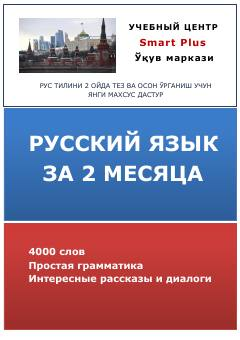

SPRus tilini 2 oyda o'rganish uchun mo'ljallangan maxsus qo'llanma va lug'at.
Ushbu qo'llanma rus tilini 2 oy ichida tez va oson o'rganishga mo'ljallangan bo'lib, 4000 ta so'z, sodda grammatika hamda qiziqarli muloqotlarni o'z ichiga oladi. Urayev tomonidan tuzilgan ushbu dastur boshlang'ich va o'rta bosqichdagi o'quvchilarga rus tilining asosiy qoidalarini o'zlashtirishda yordam beradi.